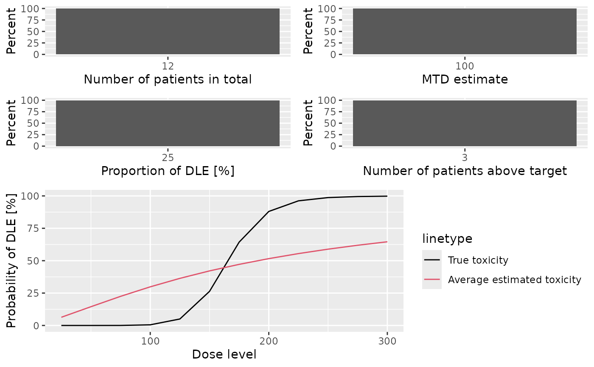

Plot summaries of the pseudo simulations
Source:R/Simulations-methods.R
plot-PseudoSimulationsSummary-missing-method.RdGraphical display of the simulation summary
Arguments
- x
the
PseudoSimulationsSummaryobject we want to plot from- y
missing
- type
the types of plots you want to obtain.
- ...
not used
Value
A single ggplot object if a single plot is
asked for, otherwise a gridExtra{gTree} object.
Details
This plot method can be applied to PseudoSimulationsSummary
objects in order to summarize them graphically. This can be used when only DLE responses are involved
in the simulations. This also applied to results with or without samples generated during the simulations
Examples
# nolint start
##obtain the plot for the simulation results
##If only DLE responses are considered in the simulations
##Specified your simulations when no DLE samples are used
##Define your data set first using an empty data set
## with dose levels from 25 to 300 with increments 25
data <- Data(doseGrid=seq(25,300,25))
##Specified the model of 'ModelTox' class eg 'LogisticIndepBeta' class model
model<-LogisticIndepBeta(binDLE=c(1.05,1.8),DLEweights=c(3,3),DLEdose=c(25,300),data=data)
##Then the escalation rule
tdNextBest <- NextBestTD(prob_target_drt=0.35,
prob_target_eot=0.3)
## The cohort size, size of 3 subjects
mySize <-CohortSizeConst(size=3)
##Deifne the increments for the dose-escalation process
##The maximum increase of 200% for doses up to the maximum of the dose specified in the doseGrid
##The maximum increase of 200% for dose above the maximum of the dose specified in the doseGrid
##This is to specified a maximum of 3-fold restriction in dose-esclation
myIncrements<-IncrementsRelative(intervals=c(min(data@doseGrid),max(data@doseGrid)),
increments=c(2,2))
##Specified the stopping rule e.g stop when the maximum sample size of 12 patients has been reached
myStopping <- StoppingMinPatients(nPatients=12)
##Now specified the design with all the above information and starting with a dose of 25
design <- TDDesign(model=model,
nextBest=tdNextBest,
stopping=myStopping,
increments=myIncrements,
cohortSize=mySize,
data=data,startingDose=25)
##Specify the truth of the DLE responses
myTruth <- probFunction(model, phi1 = -53.66584, phi2 = 10.50499)
## Then specified the simulations and generate the trial
##For illustration purpose only 1 simulation is produced (nsim=1).
##The simulations
mySim <- simulate(design,
args=NULL,
truth=myTruth,
nsim=1,
seed=819,
parallel=FALSE)
##Then produce a summary of your simulations
MYSUM <- summary(mySim,
truth=myTruth)
##plot the summary of the simulations
print(plot(MYSUM))

##If DLE samples are involved
##The escalation rule
tdNextBest <- NextBestTDsamples(
prob_target_drt = 0.35,
prob_target_eot = 0.3,
derive = function(samples) {
as.numeric(quantile(samples, probs = 0.3))
}
)
##specify the design
design <- TDsamplesDesign(model=model,
nextBest=tdNextBest,
stopping=myStopping,
increments=myIncrements,
cohortSize=mySize,
data=data,startingDose=25)
##options for MCMC
options<-McmcOptions(burnin=100,step=2,samples=200)
##The simulations
##For illustration purpose only 1 simulation is produced (nsim=1).
# mySim <- simulate(design,
# args=NULL,
# truth=myTruth,
# nsim=1,
# seed=819,
# mcmcOptions=options,
# parallel=FALSE)
# ##Then produce a summary of your simulations
# MYSUM <- summary(mySim,
# truth=myTruth)
# ##plot the summary of the simulations
# print(plot(MYSUM))
# nolint end